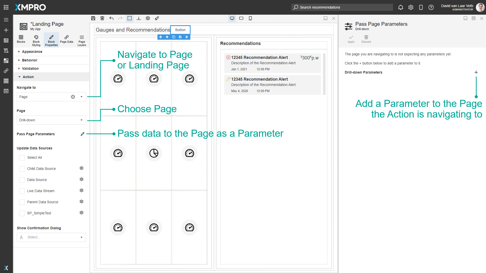
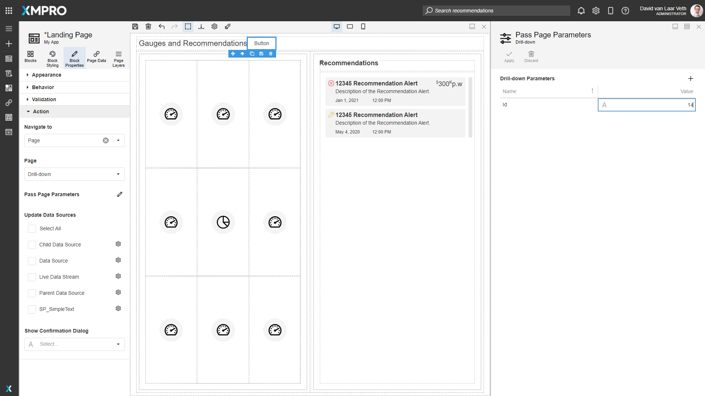
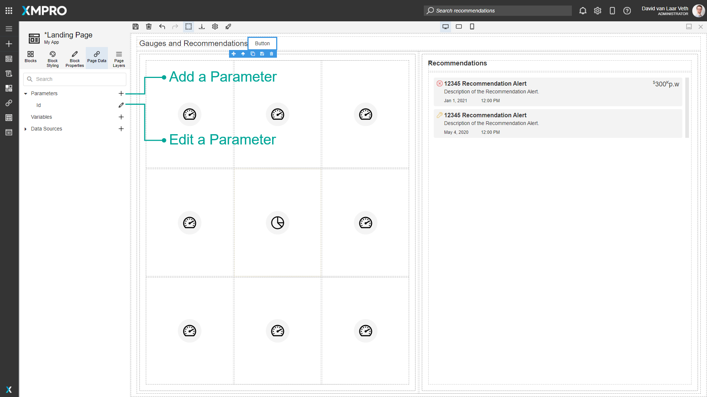

Navigation and Parameters
It is possible to allow navigation between Pages of an App by configuring the Action of a Block, and pass data to the Page by configuring the Pass Page Parameters option. You can add Parameters to the Page you are navigating to, and configure what value should be passed to them when the button is clicked. You can choose Dynamic or Static values.
Parameters may be needed if you want to send particular values onto another page as the user clicks on it. For example, if you have a list of machines, and a user selects one, the application may open a new page that displays information for that particular machine. In that case, you may want to pass the ID of the machine the user clicked on to the page that is being opened.


You can add and edit Parameters for the current Page in the Page Data tab.

Parameters have a Type that restricts what type of data can be sent to the Parameter. The options for Type are Boolean, DateTime, Double, Int, Long, and String.
The following Blocks allow Action:
- Box Hyperlink
- Button
- Chart
- Esri Map
- Data Grid
- Hyperlink
- Indicator
- List
- Map
- Templated List
- Toolbar
- Tree Grid
- Tree List
Further Reading
Last modified: May 24, 2025